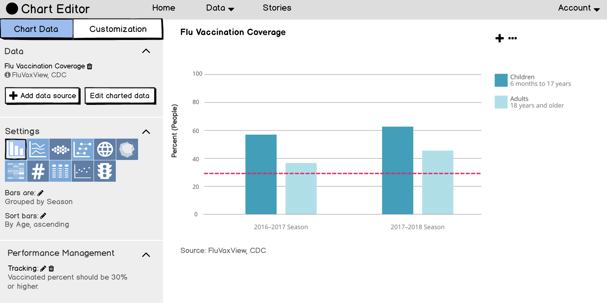

LiveStories Rebranding and Redesign
Public health organizations are tasked with compiling huge amounts of data, and presenting that data to their constituents. As the sole designer at LiveStories, I redesigned the UX/UI of entire product, including overhaul of overall IA, UX/UI for website and core data visualization tools, and branding and product design language. All this was to make “data about how we work, live, and play” more accessible, especially to those who are “not data experts.”

A banner from the LiveStories branding redesign
Process
The main challenge of the product was: how do you make complicated data easy to browse and understand? Most users were experts with data, but needed LiveStories to make compelling interactive charts for their audiences. Knowledge about data science also varied between users; a concept that one user calls an “indicator” is known to another as a “dimension.”
I started all concepts from sketches.

A sketch for how filtering charts should work
Once I had a general idea for a feature and feedback from the VP of Product and development teams on what parts seemed most challenging to understand and develop, I tested the feature. I created a process for user testing new features on our existing customer base, using low-fidelity click-through prototypes and live builds. I interacted with all customers remotely.
A screenshot of a low-fidelity prototype
I also created high-fidelity mockups and wrote technical requirements for direct hand-off to three different development teams responsible for web UX/UI, data visualization UX/UI, and a specific team working on UX/UI for users to be able to put their own data on LiveStories to chart. I supported engineering teams through sprint cycles, providing detail for unforeseen edge cases, and adjusting design when necessary to ensure sprint goals were met.

A screenshot of a high-fidelity mockup
The updated designs were viewed by users as simpler, cleaner, and more straight-forward compared to both existing designs and their current charting tools, especially in the context when they “just needed a chart,” and didn't want to wade through spreadsheets of number data..